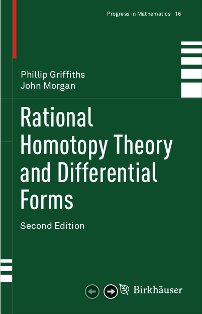

Rational Homotopy Theory
--- Summer 2019
Office: MM307
Email: hew@unr.edu
Lecture Notes: Lecture Notes
(updating)
An extended note on
Spectral Sequence.
References:
Main reference book for this lecture note:
-
Phillip Griffiths and John Morgan,
Rational homotopy
theory and differential forms, Second ed., Progr. Math.,
vol. 16, Springer, New York, 2013.
MR3136262
Some other books:
-
Yves Félix, Stephen Halperin, and Jean-Claude Thomas,
Rational homotopy
theory, Graduate Texts in Mathematics, vol. 205, Springer-Verlag, New York,
2001.
MR1802847
-
Yves Félix, Stephen Halperin, and Jean-Claude Thomas,
Rational homotopy theory II ,
World Scientific Publishing, Hackensack, NJ, 2015.
MR3379890
- Yves Félix, John Oprea, and Daniel Tanré,
Algebraic models in geometry, Oxford Grad. Texts in Math.,
vol. 17, Oxford Univ. Press, Oxford, 2008.
MR2403898
Two seminal papers:
-
Daniel Quillen, Rational
homotopy theory, Ann. of Math. (2) 90 (1969), 205-295.
MR0258031
-
Dennis Sullivan,
Infinitesimal computations in topology, Inst. Hautes Études Sci. Publ. Math.(1977), no. 47, 269-331.
MR0646078
Some important papers:
-
Pierre Deligne, Phillip Griffiths, John Morgan, and Dennis Sullivan,
Real homotopy theory of Kähler manifolds. ,
Invent. Math. 29 (1975), no. 3, 245-274.
MR0382702
-
Stephen Halperin and James Stasheff,
Obstructions to
homotopy equivalences, Adv. in Math. 32 (1979), no. 3, 233-279.
MR539532
-
John W. Morgan, The
algebraic topology of smooth algebraic varieties, Inst. Hautes Études Sci. Publ. Math. (1978), no. 48, 137-204.
MR516917
Some lecture notes:
-
Kathryn Hess,
Rational homotopy theory: a brief introduction.
Interactions between homotopy theory and algebra, 175--202, Contemp. Math., 436, Amer.
Math. Soc., Providence, RI, 2007
MR2355774
-
Alexander Berglund,
Rational homotopy theory. lecture notes 2012.
http://staff.math.su.se/alexb/rathom2.pdf
-
Yves Félix, Steve Halperin,
Rational homotopy theory via Sullivan models: a survey.
arXiv:1708.05245
Elementary homotopy theory
-
Allen Hatcher, Algebraic topology, (Chapter 4) Cambridge University Press,
Cambridge, 2002.
MR1867354
http://www.math.cornell.edu/~hatcher/
- M.Huntchings, Introduction to higher homotopy groups and
obstruction theory ,
https://math.berkeley.edu/~hutching/teach/215b-2011/homotopy.pdf
Spectral sequences
- R.Bott and L.Tu, Differential Forms in Algebraic Topology, (Chapter 14) Springer, (1982).
-
John McCleary, A user's guide to spectral sequences, second ed.,
Cambridge Studies in Advanced Mathematics, vol. 58, Cambridge University
Press, Cambridge, 2001.
MR1793722
-
A.Hatcher, Spectral Sequences in Algebraic Topology,
http://www.math.cornell.edu/~hatcher/
- M.Huntchings, Introduction to spectral sequence,
http://math.berkeley.edu/~hutching/teach/215b-2011/ss.pdf